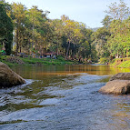

สถานณ์ที่ท่องเที่ยว
มีประเพณีวัฒนธรรมต่างๆมากมายและสถานณ์ที่ท่องเที่ยวภายในจังหวัดกำแพงเพชร ได้แก่ รูปตามต่อไปนี้


ตามประวัติศาสตร์ กล่าวว่า กำแพงเพชรเป็นเมืองหน้าด่านของสุโขทัยมีฐานะเป็นเมืองลูกหลวง เดิมเรียกชื่อว่า " เมืองชากังราว" และมีเมืองบริวารรายล้อมอยู่เป็นจำนวนมาก เช่น ไตรตรึงษ์ เทพนคร ฯลฯ การที่กำแพงเพชรเป็นเมืองหน้าด่านรับศึกสงครามในอดีตอยู่เสมอ จึงเป็นเมืองยุทธศาสตร์มีหลักฐานที่แสดงให้เห็น ว่าเป็นเมืองที่มีความสำคัญทางประวัติศาสตร์มากมาย เช่น กำแพงเมือง คูเมือง ป้อมปราการ วัดโบราณ มีหลักฐาน ให้สันนิษฐานว่าเดิมเคยเป็นที่ตั้งของเมือง 2 เมือง คือ เมืองชากังราว และเมืองนครชุม โดยเมืองนครชุมสร้างขึ้นก่อน ตั้งอยู่ทางฝั่งตะวันตกของแม่น้ำปิง พระเจ้าเลอไท กษัตริย์องค์ที่ 4 แห่งราชวงศ์สุโขทัย เป็นผู้สร้างขึ้นเมื่อประมาณ พ.ศ. 1800 ต่อมาสมัยพระเจ้าลิไท กษัตริย์องค์ที่ 5 แห่งราชวงศ์สุโขทัยได้สร้างเมืองใหม่ขึ้นทางฝั่งตะวันออกของลำน้ำปิงคือ “ เมืองชากังราว ”
สมเด็จกรมพระยาดำรงราชานุภาพได้ทรงบันทึกเรื่อง กำแพงเมืองไว้ว่า " เป็นกำแพงเมืองที่เก่าแก่ มั่นคง ยังมีความสมบูรณ์มาก และเชื่อว่าสวยงามที่สุดในประเทศไทย ปัจจุบันจังหวัดกำแพงเพชรเป็นเมืองศูนย์กลางการท่องเที่ยวทางประวัติศาสตร์แห่งหนึ่ง เพราะมีโบราณสถานเก่าแก่ซึ่งก่อสร้างด้วยศิลาแลงหลายแห่งรวมอยู่ใน " อุทยานประวัติศาสตร์กำแพงเพชร" ที่ได้รับการพิจารณาคัดเลือกจากองค์การศึกษาวิทยาศาสตร์และวัฒนธรรมแห่งสหประชาชาติ (UNESCO) ให้ขึ้นทะเบียนเป็นมรดกโลก เมื่อวันที่ 12 ธันวาคม 2534
มีประเพณีวัฒนธรรมต่างๆมากมายและสถานณ์ที่ท่องเที่ยวภายในจังหวัดกำแพงเพชร ได้แก่ รูปตามต่อไปนี้
อุทยานภายในจังหวัดกำเพชรมีทั้งหมด 3 อุทานได้แก่
ที่อยู่: GG59+682 ตำบล หนองปลิง อำเภอเมืองกำแพงเพชร กำแพงเพชร 62000 โทรศัพท์: 055 854 736 ขึ้นทะเบียน: 2534 (คณะกรรมการสมัยที่ 15) ประเทศ: ไทยประเภท: มรดกทางวัฒนธรรมเวลาทำการ:ทุกวันตั้งแต่6.00น.ถึง18.00น.
ที่อยู่: 446 หมู่ที่ 22 โกสัมพี อำเภอโกสัมพีนคร กำแพงเพชร 62000 พื้นที่: 747 ตร.กม. โทรศัพท์: 093 790 0935 จัดตั้ง: พ.ศ. 2533 ผู้บริหาร: กรมอุทยานแห่งชาติ สัตว์ป่า และพันธุ์พืช เวลาทำการ: 24 ชั่วโมง
ที่อยู่: ตำบล คลองลานพัฒนา อำเภอคลองลาน กำแพงเพชร 62180 เวลาทำการ:ทุกวันตั้งแต่8.30น.ถึง16.00น. โทรศัพท์: 088 407 9915 พื้นที่: 300 ตร.กม. ผู้บริหาร: กรมอุทยานแห่งชาติ สัตว์ป่า และพันธุ์พืช จัดตั้ง: 25 ธันวาคม 2528 ที่ตั้ง: อำเภอคลองลาน จังหวัดกำแพงเพชร ไทย
สถานที่อุทยานลภายในจังหวัดกำแพงเพชร ได้แก่
ความในศิลาจารึกสุโขทัย (จารึกพ่อขุนรามคำแหงมหาราช) ได้กล่าวถึงเมืองคณฑี (ปัจจุบันอยู่ในท้องที่บ้านโคน ตำบลคณฑี อำเภอเมืองกำแพงเพชร) ว่าอยู่ในอาณาเขตของอาณาจักรสุโขทัยในสมัยพ่อขุนรามคำแหงมหาราชสะท้อนให้เห็นถึงความสำคัญของเมืองกำแพงเพชรในสมัยสุโขทัยตอนต้น (ช่วงพุทธศตวรรษที่ ๑๙) นอกจากนั้นหลักฐานทางศิลปกรรมที่เหลืออยู่ เช่นพระเจดีย์ทรงพุ่มข้าวบิณฑ์ หรือทรงดอกบัวตูม ยังสะท้อนให้เห็นได้ว่าจังหวัดกำแพงเพชรโดยเฉพาะเมืองโบราณนครชุม มีความสำคัญไม่น้อยต่ออาณาจักรสุโขทัยในช่วงเวลานั้น โดยมีหลักฐานเป็นทั้งศูนย์กลางพระพุทธศาสนาและศิลปกรรม ทั้งเป็นศูนย์กลางการควบคุมการค้าขายและคมนาคมของอาณาจักรสุโขทัยทางตอนใต้
อุทยานแห่งชาติคลองวังเจ้า ได้รับการจัดตั้งเป็นอุทยานแห่งชาติ เมื่อ พ.ศ.2533 ซึ่งอุทยานแห่งชาติเป็นพื้นที่ คุ้มครองรูปแบบหนึ่งที่รัฐ โดยกรมป่าไม้จัด ตั้งขึ้นตามพระราชบัญญัติ อุทยานแห่งชาติ พ.ศ.2504 เพื่อคุ้มครอง รักษาทรัพยากรธรรมชาติที่มีอยู่ เช่น พันธุ์ไม้ สัตว์ป่า และของป่า ตลอดจนทิวทัศน์ป่าไม้ ภูเขา ให้คงอยู่ในสภาพธรรมชาติเดิม มิให้ถูกทำลายหรือเปลี่ยนแปลงไป เพื่อเป็นแหล่งศึกษาวิจัยให้ความรู้ความเข้าใจเกี่ยวกับธรรมชาติ ตลอดจนเป็นแหล่งท่องเที่ยวพักผ่อน หย่อนใจของประชาชน
อุทยานแห่งชาติคลองลาน เป็นอุทยานแห่งชาติในจังหวัดกำแพงเพชร มีพื้นที่มากกว่า 260,000 ไร่ หรือ (416 ตารางกิโลเมตร) มีพื้นที่ครอบคลุมถึง 4 ตำบลได้แก่ ตำบลคลองลานพัฒนา ตำบลคลองน้ำไหล ตำบลโป่งน้ำร้อน และตำบลสักงาม อำเภอคลองลาน ได้รับการจัดตั้งให้เป็นอุทยานแห่งชาติอย่างเป็นทางการในวันที่ 25 ธันวาคม พ.ศ. 2525 ภายในเขตอุทยานมีสถานที่ท่องเที่ยวที่น่าสนใจ อาทิ น้ำตกคลองลาน น้ำตกคลองน้ำไหล แก่งร้อยเกาะ เป็นต้น
2020 All Rights Reserved. Design by Free html Templates